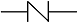
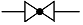
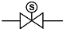
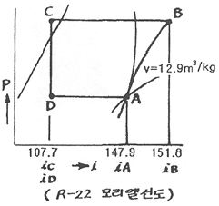
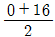
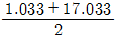
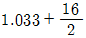
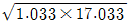
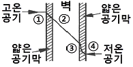

공조냉동기계기능사 (2008-03-30 기출문제)
1과목: 공조냉동안전관리
1. 가스용접 중 고무호스에 역화가 일어났을 때 제일 먼저 해야 할 일은?
- 토치에서 고무관을 뺀다.
- 즉시 용기를 눕힌다.
- 즉시 아세틸렌용기의 밸브를 닫는다.
- 안전기에 규정의 물을 넣어 다시 사용하도록 한다.
(정답률: 90%)

2. 안전관리의 목적을 올바르게 나타낸 것은?
- 기능향상을 도모한다.
- 경영의 혁신을 도모한다.
- 기업의 시설투자를 확대한다.
- 근로자의 안전과 능률을 향상시킨다.
(정답률: 89%)
3. 안전대책의 3원칙에 속하지 않는 것은?
- 기술
- 자본
- 교육
- 관리
(정답률: 94%)
4. 작업장의 출입구 설치기준으로 옳지 않은 것은?
- 출입구의 위치·수 및 크기가 작업장의 용도와 특성에 적합하도록 할 것
- 출입구에 문을 설치하는 경우에는 근로자가 쉽게 열고 닫을 수 있도록 할 것
- 주목적이 하역운반기계용인 출입구에는 보행자용 출입구를 따로 설치하지 말 것
- 계단이 출입구와 바로 연결된 경우에는 작업자의 안전한 통행을 위하여 그 사이에 충분한 거리를 둘 것
(정답률: 86%)
5. 냉동설비에 설치된 수액기의 방류둑 용량에 관한 설명으로 옳은 것은?
- 방류둑 용량은 설치된 수액기 내용적의 90% 이상으로 할 것
- 방류둑 용량은 설치된 수액기 내용적의 80% 이상으로 할 것
- 방류둑 용량은 설치된 수액기 내용적의 70% 이상으로 할 것
- 방류둑 용량은 설치된 수액기 내용적의 60% 이상으로 할 것
(정답률: 70%)
6. 전기용접에 의한 감전사망의 위험성은 체내를 통과한 다음 어느 것에 의해서 결정되는가?
- 속도치
- 전류치
- 수용치
- 주행치
(정답률: 80%)
7. 냉동기 운전 중 증발기로부터 리키드 백으로 인하여 압축기의 흡입밸브 및 토출밸브 등의 파손을 방지하기 위해 설치하는 것은?
- 증발압력조정밸브
- 흡입압력조정밸브
- 고압차단스위치
- 저압차단스위치
(정답률: 53%)
8. 다음 중 산업안전 표지의 색과 표시하는 의미가 서로 맞게 되어 있는 것은?
- 적색 : 진행표시
- 황색 : 금지표시
- 청색 : 지시표시
- 녹색 : 권고표
(정답률: 67%)
9. 보일러의 휴지보존법 중 장기보존법에 해당되지 않는 것은?
- 석회밀폐건조법
- 질소가스봉입법
- 소다만수보존법
- 가열건조법
(정답률: 64%)
10. 전동공구 사용상의 안전수칙이 아닌 것은?
- 전기드릴로 아주 작은 물건이나 긴 물건에 작업할 때에는 지그를 사용한다.
- 전기 그라인더나 샌더가 회전하고 있을 때 작업대 위에 공구를 놓아서는 안 된다.
- 수직 휴대용 연삭기의 숫돌의 노출각도는 90°까지 만 허용된다.
- 이동식 전기드릴 작업 시는 장갑을 끼지 말아야 한다.
(정답률: 73%)
11. 프레온 냉동장치에 수분이 침입하였을 경우 장치에 미치는 영향이 아닌 것은?
- 동 부착현상
- 팽창밸브 동결
- 장치 부식촉진
- 유탁액 현상
(정답률: 49%)
12. 가스 용접작업 시 안전관리 조치사항으로 틀린 것은?
- 역화 되었을 때는 산소 밸브를 열도록 한다.
- 작업하기 전에 안전기와 산소 조정기의 상태를 점검한다.
- 가스의 누설검사는 비눗물을 사용하도록 한다.
- 작업장은 환기가 잘 되게 한다.
(정답률: 88%)
13. 재해발생의 원인 중 간접원인으로서 안전관리 조직 결함, 안전수칙 미제정, 작업준비 불충분 등은 다음 중 어느 요인에 해당하는가?
- 신체적 원인
- 정신적 원인
- 교육적 원인
- 관리적 원인
(정답률: 69%)
14. 연삭숫돌을 갈아 끼운 후 시운전시 몇 분 동안 공회전을 시켜야 하는가?
- 1분 이상
- 3분 이상
- 5분 이상
- 10분 이상
(정답률: 75%)
15. 소화제로 물을 사용하는 이유로 가장 적당한 것은?
- 산소를 잘 흡수하기 때문이다.
- 증발잠열이 크기 때문이다.
- 연소하지 않기 때문이다.
- 산소와 가열물질을 분리시키기 때문에
(정답률: 81%)
2과목: 냉동기계
16. 다음 중 반도체를 이용하는 냉동기는?
- 흡수식 냉동기
- 전자식 냉동기
- 증기분사식 냉동기
- 스크류 냉동기
(정답률: 83%)
17. 관 절단 후 절단부에 생기는 비트(거스러미)를 제거하는 공구는?
- 클립
- 사이징 투울
- 파이프 리머
- 쇠톱
(정답률: 84%)
18. 다음 중 저장품을 동결하기 위한 동결부하계산에 속하지 않는 것은?
- 동결 전 부하
- 동결 후 부하
- 동결잠열
- 환기부하
(정답률: 76%)
19. 응축기에 관한 설명 중 옳은 것은?
- 입형 쉘 엔 튜브 응축기보다 횡형 쉘 엔 튜브 응축기가 다량의 냉각수를 필요로 한다.
- 증발식 응축기는 다량의 물을 필요로 하기 때문에 널리 사용되지 않는다.
- 프레온용 횡형 쉘 엔 튜브 응축기에 핀을 붙일 때는 물측에 붙이는 것보다 냉매측에 붙이는 것이 보통이다.
- 응축기는 수액기의 밑에 설치하는 것이 좋다.
(정답률: 45%)
20. 압축기의 톱 클리어런스가 크면 어떠한 영향이 나타나는가?
- 체적효율이 증대한다.
- 냉동능력이 감소한다.
- 토출가스 온도가 저하한다.
- 윤활유가 열화하지 않는다.
(정답률: 60%)
21. 표준냉동사이클을 모리엘 선도상에 나타내었을 때 온도와 압력이 변하지 않는 과정은?
- 과냉각과정
- 팽창과정
- 증발과정
- 압축과정
(정답률: 50%)
22. 시퀸스 제어에 속하지 않는 것은?
- 자동전기 밥솥
- 전기세탁기
- 가정용 전기냉장고
- 네온 싸인
(정답률: 73%)
23. 동력의 단위 중 그 값이 큰 순서대로 나열이 된 것은?
- 1KW > 1PS > 1kgf·m/sec > 1kcal/h
- 1KW > 1kcal/h > 1kgf·m/sec > 1PS
- 1PS > 1kgf·m/sec > 1kcal/h > 1KW
- 1PS > 1kgf·m/sec > 1KW > 1kcal/h
(정답률: 67%)
24. 열펌프에 대한 설명 중 옳은 것은?
- 저온부에서 열을 흡수하여 고온부에서 열을 방출한다.
- 성적계수는 냉동기 성적계수보다 압축소요동력만큼 낮다.
- 제빙용으로 사용이 가능하다.
- 성적계수는 증발온도가 높고, 응축온도가 낮을수록 작다.
(정답률: 60%)
25. 2단 압축장치의 중간 냉각기의 역할이 아닌 것은?
- 압축기로 흡입되는 액냉매를 방지하기 위함이다.
- 고압응축액을 냉각시켜 냉동능력을 증대시킨다.
- 저단측 압축기 토출가스의 과열을 제거한다.
- 냉매액을 냉각하여 그 중에 포함되어 있는 수분을 동결시킨다.
(정답률: 48%)
26. 냉매가 냉동기유에 다량으로 용해되어 압축기 기동시 크랭크케이스내의 압력이 급격히 낮아지면서 발생하는 현상은?
- 오일흡착현상
- 오일에멀젼 현상
- 오일포밍현상
- 오일캐비테이션 현상
(정답률: 54%)
27. 다음 중 게이트 밸브의 도시기호는?




(정답률: 53%)
28. 만액식 증발기에서 전열을 좋게 하는 조건 중 틀린 것은?
- 냉각관이 냉매 액에 잠겨 있거나 접촉해 있을 것
- 관 간격이 넓을 것
- 유막이 존재하지 않을 것
- 평균온도차가 클 것
(정답률: 65%)
29. 온도작동식 자동팽창 밸브에 대한 설명이다. 옳은 것은?
- 실온을 써모 스탯에 의하여 감지하고, 밸브의 개도를 조정한다.
- 팽창밸브 직전의 냉매온도에 의하여 자동적으로 개도를 조정한다.
- 증발기 출구의 냉매온도에 의하여 자동적으로 개도를 조정한다.
- 압축기의 토출 냉매온도에 의하여 자동적으로 개도를 조정한다.
(정답률: 52%)
30. 압축기에서 보통 안전밸브의 작동압력으로 옳은 것은?
- 저압 차단 스위치 작동 압력보다 다소 낮게 한다.
- 고압 차단 스위치 작동 압력보다 다소 높게 한다.
- 유압 보호 스위치 작동 압력과 같게 한다.
- 고저압 차단 스위치 작동압력보다 낮게 한다.
(정답률: 61%)
31. 다음은 열과 온도에 관한 설명이다. 이 중 틀린 것은?
- 물체의 온도를 내리거나 올리는데 그 원인이 되는 것을 열이라 한다.
- 물체가 뜨겁고 찬 정도를 나타내는 것을 온도라 하며 단위로는 섭씨(℃)와 화씨(℉) 등이 사용된다.
- 온도가 낮은 물에 손을 담그면 차게 느껴지는 것은 물의 열이 손으로 이동하기 때문이다.
- 두 물체 사이의 온도 차이가 클수록 열의 이동이 잘 된다.
(정답률: 66%)
32. 단단 증기압축식 이론 냉동사이클에서 응축부하가 10KW이고 냉동능력이 6KW일 때 이론 성적계수는 얼마인가?
- 0.6
- 1.5
- 1.67
- 2.5
(정답률: 30%)
33. 암모니아(NH3) 냉매에 대한 설명으로 옳지 않은 것은?
- 누설검지가 대체적으로 쉽다.
- 응고점이 비교적 낮아 초저온용 냉동에 적합하다.
- 독성, 가연성, 폭발성이 있다.
- 경제적으로 우수하여 대규모 냉동장치에 널리 사용되고 있다.
(정답률: 50%)
34. 모리엘 선도를 이용하여 압축기 피스톤경 130㎜, 행정 90㎜, 4기통, 1200rpm으로서 표준상태로 작동하고 있다. 이때 냉매 순환량은 약 몇 kg/h인가?

- 26.7
- 343.8
- 1257.4
- 4438.1
(정답률: 23%)
35. 다음 중 냉각수 계통에서 발생하는 장애가 아닌 것은?
- 부식 장애
- 스케일 장애
- 슬라임 장애
- 오일 장애
(정답률: 46%)
36. 다음 중 흡수식 냉동장치의 적용대상이 아닌 것은?
- 백화점 공조용
- 산업 공조용
- 제빙공장용
- 냉난방장치용
(정답률: 64%)
37. 회전식 압축기의 특징 설명으로 틀린 것은?
- 회전식 압축기는 조립이나 조정에 있어 고도의 공작 정밀도가 요구되지 않는다.
- 잔류가스의 재팽창에 의한 체적효율의 감소가 적다.
- 직결구동에 용이하며 왕복동에 비해 부품수가 적고 구조가 간단하다.
- 왕복동에 비해 진동과 소음이 적다.
(정답률: 51%)
38. 들어오는 전류와 나가는 전류의 대수합은 0이다. 무슨 법칙인가?
- 쿨롱의 법칙
- 옴의 법칙
- 키르히호프의 제1법칙
- 줄의 법칙
(정답률: 61%)
39. 터보냉동기의 특징을 설명한 것이다. 옳은 것은?
- 마찰부분이 많아 마모가 크다.
- 소용량 제작이 용이하며 가격이 싸다.
- 저온장치에서는 압축단수가 작아지며 효율이 좋다.
- 저압냉매를 사용하므로 취급이 용이하고 위험이 적다.
(정답률: 33%)
40. 브라인의 구비조건으로 적당하지 못한 것은?
- 응고점이 낮아야 한다.
- 전열이 좋아야 한다.
- 화학반응을 일으키지 않아야 한다.
- 점성이 커야 한다.
(정답률: 77%)
41. 2단 압축냉동 사이클에서 저압이 0atg, 고압이 16atg일 때 중간 압력(ata)은?




(정답률: 35%)
42. 2원 냉동장치에 대한 설명 중 틀린 것은?
- 냉매는 저온용과 고온용을 50 : 50으로 주로 섞어서 사용한다.
- 고온측 냉매로는 응축압력이 낮은 냉매로 주로 사용한다.
- 저온측 냉매로는 비점이 낮은 냉매로 주로 사용한다.
- -80 ~ -70정도 이하의 초저온 냉동장치에 주로 사용된다.
(정답률: 49%)
43. 금속패킹의 재료로 적당치 않은 것은?
- 납
- 구리
- 연강
- 탄산마그네슘
(정답률: 49%)
44. 전기저항에 관한 설명 중 틀린 것은?
- 전류가 흐르기 힘든 정도를 저항이하 한다.
- 도체의 길이가 길수록 저항이 커진다.
- 저항은 도체의 단면적에 반비례한다.
- 금속의 저항은 온도가 상승하면 감소한다.
(정답률: 62%)
45. 다음 중 양모나 우모를 사용한 피복재료이며, 아스팔트로 방습피복한 보냉용 또는 곡면의 시공에 사용되는 것은?
- 펠트
- 콜크
- 기포성수지
- 암면
(정답률: 57%)
3과목: 공기조화
46. 온풍난방에 대한 설명 중 맞는 것은?
- 설비비는 다른 난방에 비해 고가이다.
- 열용량이 크고 예열시간이 길다.
- 토출 공기의 온도가 높으므로 쾌적도가 떨어진다.
- 실내층고가 높을 경우에는 상하의 온도차가 작다.
(정답률: 51%)
47. 쾌감용 공기조화에 해당하는 것은?
- 제품창고
- 전자계산실
- 전화국 기계실
- 학교
(정답률: 80%)
48. 실내 상태점을 통과하는 현열비선과 포화곡선과의 교점이 나타내는 온도로 취출공기가 실내 잠열부하에 상당하는 수분을 제거하는데 필요한 코일표면온도는?
- 코일 장치노점온도
- 바이패스 온도
- 실내 장치노점온도
- 설계온도
(정답률: 48%)
49. 보일러의 부속품 중 온수 보일러에 사용하지 않는 것은?
- 순환펌프
- 수면계
- 릴리프관
- 릴리프밸브
(정답률: 40%)
50. 공기에서 수분을 제거하여 습도를 조정하기 위해서는 어떻게 하는 것이 옳은가?
- 공기의 유로 중에 가열코일을 설치한다.
- 공기의 유로 중에 공기의 노점온도보다 높은 온도의 코일을 설치한다.
- 공기의 유로 중에 공기의 노점온도와 같은 온도의 코일을 설치한다.
- 공기의 유로 중에 공기의 노점온도보다 낮은 온도의 코일을 설치한다.
(정답률: 54%)
51. 2중 덕트 방식에 대한 설명 중 잘못된 것은?
- 실의 냉·난방 부하가 감소되어도 취출 공기의 부족현상이 없다.
- 실내습도의 완전한 조절이 가능하다.
- 동시에 냉·난방을 행하기가 용이하다.
- 설비비 및 운전비가 많이 든다.
(정답률: 55%)
52. 팩케지 유닛 공조방식의 특징이 아닌 것은?
- 취급이 간단해서 단독운전을 할 수 있고 대규모 건물의 부분 공조가 용이하다.
- 실내에 설치하는 경우 급기를 위한 덕트 샤프트가 필요 없다.
- 압축기를 실외기에 설치함으로서 소음을 적게 할 수 있다.
- 기계실이 필요하고 실내부하 및 운전시간이 다른 방에는 부적당하다.
(정답률: 45%)
53. 실내 냉방부하 중에서 현열부하가 2500kcal/h, 잠열부하가 500kcal/h일 때 현열비는 약 얼마인가?
- 0.2
- 0.83
- 1
- 1.2
(정답률: 58%)
54. 에어필터의 선정 및 설치에 관한 설명한 것이다. 잘못된 것은?
- 공조기내의 에어필터는 송풍기의 흡입측, 코일의 앞쪽에 설치한다.
- 고성능의 HEPA필터나 전기식필터는 송풍기의 출구측에 설치한다.
- 고성능의 HEPA필터를 사용하는 경우는 프리필터를 설치하는 것이 좋다.
- 성능표시로서 포집효율은 측정 방법에 따라 계수법 > 비색법 > 중량법 순으로 나타난다.
(정답률: 45%)
55. 환기를 계획할 때 실내 허용 오염도의 한계를 말하며 %나 ppm으로 나타내는 용어는?
- 불쾌지수
- 유효온도
- 쾌감온도
- 서한도
(정답률: 54%)
56. 공기 세정기에서 유입되는 공기를 정화시키기 위한 것은?
- 루버
- 댐퍼
- 분무노즐
- 엘리미네이터
(정답률: 53%)
57. 원심 송풍기의 번호가 NO 2일 때 회전날개의 지름은 얼마인가? (단, 단위는 ㎜)
- 150
- 200
- 250
- 300
(정답률: 45%)
58. 다음 중 진공환수식 증기난방에 관한 설명으로 틀린 것은?
- 보통 큰 건물에 적용된다.
- 구배를 경감시킬 수 있다.
- 환수를 원활하게 유통시킬 수 있다.
- 파이프 치수가 커진다.
(정답률: 59%)
59. 대형 덕트에서 덕트의 강도를 높이기 위해 덕트의 옆면 철판에 주름을 잡아주는 것을 무엇이라 하는가?
- 보강 바
- 다이아몬드 브레이크
- 보강앵글
- 슬립
(정답률: 41%)
60. 다음의 그림은 열흐름을 나타낸 것이다. 열흐름에 대한 용어로 틀린 것은?

- ① → ② : 열전달
- ② → ③ : 열관류
- ③ → ④ : 열전달
- ① → ④ : 열통과
(정답률: 62%)